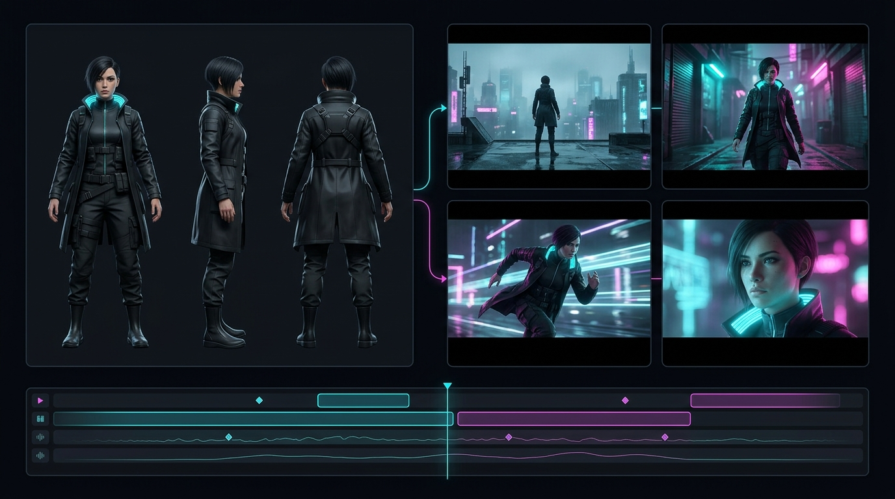

LLM 驱动的智能体视频生成：从一句话创意到完整短片（LLM → Qwen-Image → MMX-H3）
哪怕单个视频大模型强到能完美生成 10 秒 2K 音画片段，离「拍出一部 2 分钟有剧情、有人物弧光、有多机位剪辑的短片」依然隔着十万八千里：单模型一口气生成 2 分钟必然忘记主角长相、剧情失控、镜头单调。2025–2026 年最火爆的新范式是 Agentic Video Generation（智能体视频生产）——把 LLM（总导演/编剧） + Qwen-Image（美术/分镜师） + MMX-H3（全能音视频摄影机） + 剪辑/特效引擎 串成一条闭环自动化制片厂！

一、为什么是 LLM → Qwen-Image → MMX-H3 这个黄金铁三角？
🧠 大脑：LLM / VLM（编剧 + 导演 + 质检员）
负责拆解故事结构、写分镜脚本（JSON Schema）、管理全局资产表（角色/场景/道具 ID）、分配景别与运镜节奏，并在生成后当「审片导演」揪出穿帮镜头自动打回重拍。
🎨 美术：Qwen-Image / Qwen-VL（定妆 + 分镜）
极强的中英文语义理解、精准文字渲染与多图编辑/一致性能力。先生成角色三视图定妆照和场景概念图，再严格参照定妆照画出每一镜的首帧（甚至首尾帧）分镜图。
🎥 摄影机：MiniMax H3 / MMX-H3（原生音画生成）
约 33B 级全能多模态扩散底座，集 T2V、I2V、Omni-Reference（多主体参考锁定） 与 原生立体声对白/音效（最高 2K） 于一身。把分镜图和角色参考喂进去，一镜到底直接出带台词、带音效的电影镜头！
二、全链路七步拆解：一部 AI 短片是怎么「拍」出来的？
Step 1：剧本制作（Script & Bible Generation）
用户只给一句创意，比如「拍一段 45 秒的赛博朋克短片：女黑客在雨夜天台破解无人机，拿到芯片后纵身跳下逃离」。编剧 Agent（LLM）不会直接乱写提示词，而是先输出一份结构化的制片圣经（Production Bible）：
- 全局视觉风格锁：色温（青橙赛博）、胶片颗粒感、镜头焦段（Anamorphic 变形宽银幕）。
- 角色与道具档案：给每个角色分配固定 ID（如
CHAR_01）和不可更改的硬特征（橘红色短发、左颊荧光疤痕、黑色反光冲锋衣）。 - 分镜表（Shot List）：拆分成 8–12 个 3–6 秒的镜头，明确每一镜的景别（远景建立环境 → 中景交代动作 → 特写展现微表情与芯片细节 → 动感跟拍收尾）、台词和音效需求。
Step 2：人物与场景设计（Character Turnaround & Asset Bank）
拍连续剧最怕「第 1 镜主角长这样，第 2 镜换了个亲戚」。智能体会把 CHAR_01 的描述喂给 Qwen-Image，先生成一张标准的角色三视图定妆表（正面 / 侧面 / 背面 + 特写表情）和核心场景的空镜概念图，存入项目资产库（Asset Bank）。后续所有镜头只要出现 CHAR_01，全部强制挂载这张定妆照作为参考！
Step 3：分镜制作（Storyboard & Keyframes via Qwen-Image）
直接拿纯文字去文生视频（T2V）抽卡，构图和站位极难精准符合导演意图；而且视频抽卡一次贵 10 倍。聪明做法是先用 Qwen-Image 把每一镜的「首帧关键帧」（必要时加「尾帧」）全部画出来！
在图生图阶段，Qwen-Image 可以同时参考「角色三视图 + 场景空镜 + 构图描述」，一秒钟低成本刷出极高一致性的分镜图。甚至可以一次性生成 2×2 / 3×3 的多格连环分镜板（Multi-Panel Storyboard），利用同图自注意力天然保证色调、光影和脸型 100% 统一，再切分超分作为每镜首帧！
Step 4：视频生成（MMX-H3 逐镜拍活）
拿到锁定好的分镜首帧图、角色参考图和这一镜的 Dense AV Prompt 后，编排引擎（如 ComfyUI / Python Agent Harness）并发调用 MiniMax H3（MMX-H3）：
- 首帧 I2V 模式：锁死起始构图，把画面自然推演 5–10 秒。
- 首尾帧模式（First-Last Frame）：针对需要精确过渡到下一个动作的镜头，同时喂首帧和尾帧，MMX-H3 自动补出丝滑的物理运动轨迹。
- Omni-Reference 模式：当镜头里出现主角转身、大幅度运镜时，同时传入角色三视图参考，防止侧脸/背影崩坏。
- 原生音画输出：MMX-H3 直接在同一 pass 里吐出带口型同步对白、雨声、无人机嗡鸣的立体声音轨！
Step 5：组合与闭环质检（Assembly & VLM Self-Correction）
AI 生成不可能 100% 一次成功。成熟智能体（如 ViMax / MovieAgent 架构）在生成完每镜后，会自动调用 VLM 审片 Agent（如 Qwen3-VL） 抽帧检查：
- 人脸余弦相似度（ArcFace / PE）是否跌破阈值？
- 有没有明显的多手、穿模、物体凭空消失？
- 动作有没有真的按脚本执行（而不是原地发呆）？
一旦质检打回，Agent 会自动微调 Seed、加强运镜词或调低 Motion 强度，只重拍坏掉的那一镜，完全不用整部片子推倒重来！需要连续长镜头时，还会自动抽取上一镜的最后一帧作为下一镜的首帧实现无缝衔接。
Step 6 & Step 7：智能剪辑、特效与音画母带合成
把所有合格镜头交给剪辑工具链（FFmpeg / MoviePy / CapCut API / DaVinci 脚本）：
- 节奏剪辑与 J-Cut / L-Cut：切掉每镜开头 0.2s 的起势僵硬帧，用电影级 J-Cut（下一镜的声音提前 0.5 秒响起，画面再切过去）制造专业电影感，告别生硬的 PPT 拼接。
- 视觉特效与统一调色（Color Grading）：给所有镜头套用同一套电影 3D LUT 统一黑位与色调，在关键高潮点叠加速度曲线（Speed Ramp）、故障风（Glitch）、光晕或转场粒子特效。
- 多轨混音（Audio Mixing & Ducking）：底层铺一条连贯的贯穿全片的 BGM 音乐（如 Suno/AudioGen 生成），中层放各镜头的原生环境声与拟音，顶层放清晰人声对白；开启自动侧链闪避（Auto-Ducking）——有人说话时 BGM 自动压低 8dB，最后统一响度标准化到
-14 LUFS并烧录双语动态字幕！
三、干货模板：LLM 导演 Agent 输出的标准分镜 JSON Schema
如果你自己想用 Python + ComfyUI 搭一套 LLM → Qwen-Image → MMX-H3 智能体，下面这份经过实战验证的分镜 JSON 结构可以直接抄作业：
{
"project_style": "Cyberpunk noir, 35mm anamorphic lens, teal-and-magenta neon rain, high contrast film grain",
"assets": {
"CHAR_NOVA": {
"desc": "East Asian woman in her 20s, short burnt-orange hair, glowing cyan scar on left cheek, matte black techwear trench coat",
"turnaround_img": "assets/char_nova_sheet.png"
},
"SCENE_ROOF": {
"desc": "Rain-soaked skyscraper rooftop in Neo-Tokyo at midnight, holographic billboards in fog",
"ref_img": "assets/scene_rooftop.png"
}
},
"shots": [
{
"shot_id": 1,
"duration_sec": 5.0,
"camera": "Wide establishing drone push-in",
"qwen_image_prompt": "Wide shot of CHAR_NOVA standing on the edge of SCENE_ROOF, back three-quarter view, rain pouring, neon reflections...",
"mmx_h3_video_prompt": "Slow cinematic push-in towards CHAR_NOVA as she raises her left wrist holographic terminal. Heavy rain streaks fall past neon signs. [Audio] Heavy rain hitting metal roof, distant siren, low synth hum.",
"omni_refs": ["CHAR_NOVA", "SCENE_ROOF"],
"transition_to_next": "J-cut 0.4s audio lead"
},
{
"shot_id": 2,
"duration_sec": 4.5,
"camera": "Extreme close-up on face and glowing data chip",
"qwen_image_prompt": "Close-up of CHAR_NOVA looking down at a glowing cyan microchip between her fingers, rain droplets on face...",
"mmx_h3_video_prompt": "CHAR_NOVA looks up sharply toward the camera with determination and speaks calmly: <S>We're in. Shut down the grid.<E> Subtle handheld micro-shake. [Audio] Crisp rain on jacket, electronic lock click, clear female voice.",
"omni_refs": ["CHAR_NOVA"],
"transition_to_next": "Hard cut on beat"
}
]
}想知道单镜原生音视频生成出来的实际观感（包括人物特写微表情、真实对白口型和环境音）到底有多惊艳？立刻点击下方进入 第 10 章：音视频案例实验室，亲自打开声音播放并体验一键同步对比！